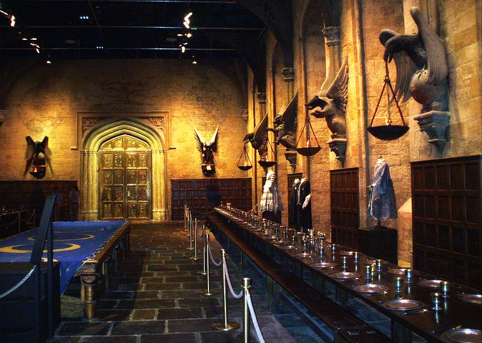
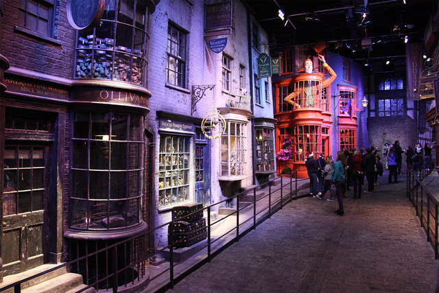
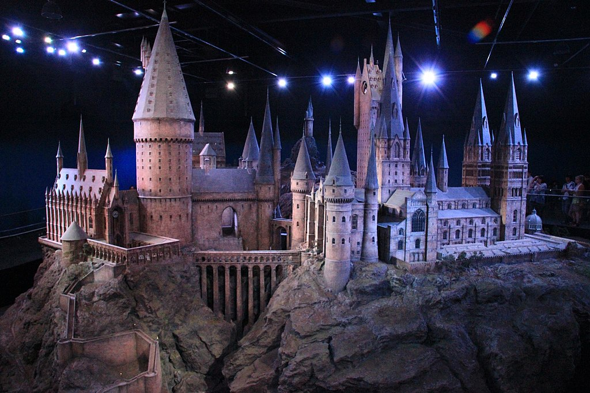
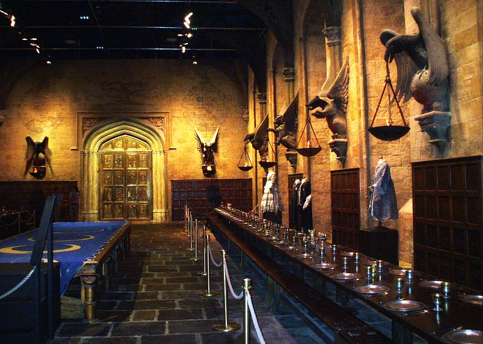
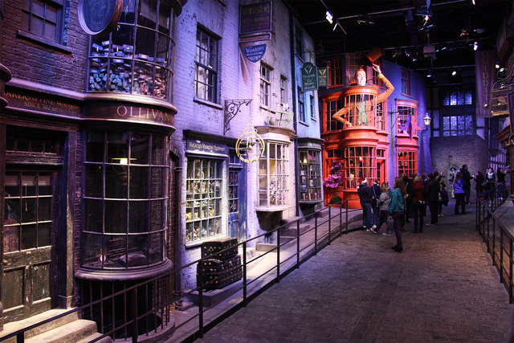
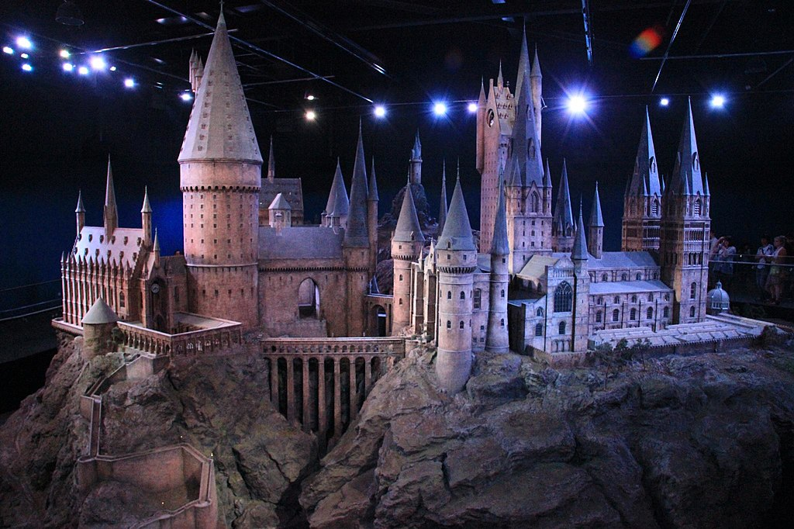

Tudo sobre Harry Potter
Harry Potter é uma série de sete romances de fantasia escrita pela autora britânica J. K. Rowling. A série narra as aventuras de um jovem chamado Harry James Potter (Harry Tiago Potter, no Brasil), que descobre aos 11 anos de idade que é um bruxo ao ser convidado para estudar na Escola de Magia e Bruxaria de Hogwarts. O arco de história principal diz respeito às amizades de Harry com outros bruxos de sua idade, como Ron Weasley e Hermione Granger, e também com o diretor de Hogwarts Albus Dumbledore, considerado o maior dos magos, e seus conflitos com o bruxo das trevas Lord Voldemort, que pretende se tornar imortal, conquistar o mundo dos bruxos, subjugar as pessoas não-mágicas, e destruir todos aqueles que estão em seu caminho, especialmente Harry Potter, a quem ele considera seu maior rival.
Desde o lançamento do primeiro romance, Harry Potter e a Pedra Filosofal, em 26 de junho de 1997, os livros ganharam uma imensa popularidade, aclamação da crítica e foram um sucesso comercial em todo o mundo. A série também recebeu algumas críticas, incluindo a preocupação com o tom cada vez mais sombrio conforme a história progredia. Até maio de 2015, já haviam sido vendidas 450 milhões de cópias em todo o mundo, tornando a série a best-seller da história, sendo traduzida para 73 idiomas. Os últimos quatro livros consecutivamente foram considerados os mais vendidos da história, sendo que o último livro vendeu cerca de 11 milhões de cópias nos Estados Unidos nas primeiras 24 horas após o seu lançamento.
A série abrange vários gêneros, como fantasia, vida escolar e passagem entre a infância e a juventude (com elementos de mistério, suspense, aventura e romance), sendo que a história tem muitos significados e referências culturais. De acordo com Rowling, o tema principal é a morte. Há também muitas outras temáticas na série, como preconceito e corrupção.
Os livros foram originalmente impressos em inglês por duas grandes editoras, a Bloomsbury do Reino Unido e a Scholastic Press nos Estados Unidos. A série já foi publicada por muitas editoras em todo o mundo. A adaptação para uma série composta por oito filmes feita pela Warner Bros. Pictures se tornou a série cinematográfica mais assistida da história. Tamanho sucesso fez com que a marca Harry Potter chegasse ao valor de 15 bilhões de dólares. Além disso, o parque temático The Wizarding World of Harry Potter foi introduzido em diversas unidades da Universal Parks & Resorts.
Enredo
Os romances giram em torno de Harry James Potter, um órfão que descobre com 11 anos que é um bruxo, que vive no mundo comum de pessoas não-mágicas, conhecidas como "trouxas". O mundo bruxo é mantido em segredo, presumivelmente para evitar a perseguição de bruxas e bruxos. Tal habilidade é inata e essas crianças são convidadas a participar de uma escola de magia exclusiva, que ensina as habilidades necessárias para ter sucesso no mundo bruxo. Harry torna-se um estudante da Escola de Magia e Bruxaria de Hogwarts e é ali onde a maioria dos eventos da série acontecem. Enquanto Harry se desenvolve através da adolescência, ele aprende a superar os problemas que ele enfrenta: mágicos, sociais e emocionais, incluindo desafios adolescentes comuns, como amizades, paixões e provas, e o grande teste de preparar a si mesmo para o confronto no mundo real que temos pela frente.
Cada livro narra um ano na vida de Harry, sendo que a narrativa principal se passa entre os anos de 1991 e 1998. Os livros também contêm muitos flashbacks, que são frequentemente vividos por Harry ao ver as lembranças de outros personagens em um dispositivo chamado penseira. O ambiente criado por Rowling é completamente separado da realidade mas também intimamente ligado a ela. Enquanto a terra da fantasia de Nárnia é um universo alternativo e a Terra Média de O Senhor dos Anéis é um passado mítico, o mundo mágico de Harry Potter existe em paralelo dentro do mundo real e contém versões mágicas de elementos comuns da vida cotidiana. Muitas de suas instituições e locais são reconhecíveis, tais como Londres. O mundo bruxo é composto por uma coleção fragmentada de ruas escondidas, bares antigos, mansões e castelos solitários e isolados, que permanecem invisíveis para a população trouxa.
Prêmios e honrarias
A série Harry Potter tem recebido vários prêmios desde a publicação inicial de A Pedra Filosofal incluindo quatro Whitaker Platinum Book Awards (todos os quais foram concedidos em 2001), três Nestlé Smarties Book Prizes (1997–1999), dois Scottish Arts Council Book Awards (1999 e 2001), entre outros. Em 2000, Harry Potter e o Prisioneiro de Azkaban foi indicado para o Prêmio Hugo de Melhor Romance e, em 2001, Harry Potter e o Cálice de Fogo venceu. Honrarias incluem um elogio para a Medalha Carnegie (1997), o Children's Fiction Prize do The Guardian (1998), e inúmeras listas de melhores livros da American Library Association, The New York Times, Chicago Public Library e Publishers Weekly.
Um estudo de 2004 descobriu que livros da série eram comumente lidos em voz alta em escolas de ensino fundamental do Condado de São Diego na Califórnia, Estados Unidos. Com base em uma pesquisa on-line de 2007, a Associação Nacional de Educação dos Estados Unidos listou a série em sua lista de "100 Melhores Livros para Crianças". Três dos livros (Pedra Filosofal, Prisioneiro de Azkaban e Cálice de Fogo) estavam entre os melhores livros de todos os tempos em uma pesquisa 2012 do School Library Journal.
Mais imagens
 




